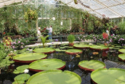
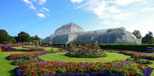
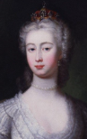
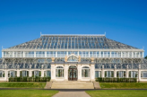
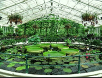
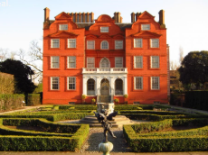
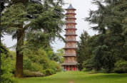
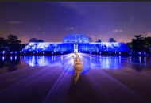
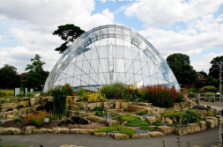

Kew Gardens for junior classes

Lord Henry Capel made the Royal Botanic Gardens, Kew, in 1670 in Kew Park. It was on the place of an old garden for medicine plants.
Royal Botanic Gardens, Kew, in London have
• One of the biggest collections of living plants in the world — more than 30,000 kinds from all over the planet.
• One of the biggest herbaria in the world — it has 7 million plant samples.
• A library with more than 750,000 books and more than 175,000 pictures of plants.
• In the rock garden, they grow plants from mountains.
The garden has different parts
For example


Entrance gates — lawns with trees and plants.
Coastal zone — here are the Herbarium, Kew Palace, a small garden, a plant nursery, Joseph Banks Economic Botany Centre, and work buildings.
Northeast zone — here are offices and houses, garden plots, and old buildings — the Water Garden and the Rockery.
Palm House zone — has lawns, flower beds, terraces to rest, and decorative ponds.
Pagoda Alley — the old part of the garden. The Pagoda is in the middle. There are big leaf trees and green plants on the sides.
Southwest zone — forest park area with buildings.
Syon Alley — has alleys and a lake.
West zone — the old part with the Bamboo Garden and Azalea Garden.
Kew Gardens for senior classes

The Royal Botanic Gardens, Kew, is a group of botanical gardens and greenhouses in the southwest part of London, between Richmond and Kew.
Lord Henry Capell made the Kew botanical gardens in 1670 in Kew Park on the place of a pharmacy garden.
Later, in 1759, Princess Augusta of Saxe-Gotha started the gardens. She collected many plants. She also made a new garden and a tree collection area. In 3.6 hectares, she grew many medicine and exotic plants.
By 1768, Princess Augusta had 2700 kinds of plants in her collection.
The princess’s legacy is still kept in a special part of the gardens
Some parts of Kew Gardens






Temperate House — a greenhouse that was built for 40 years (from 1859 to 1899).
Picture backgroundNow, it is the biggest old Victorian greenhouse left. It is 188 meters long, the floor is 4880 square meters, and it is 18 meters tall.
Water Lily House is a greenhouse for water plants. It is the hottest and most wet room in Kew. In the middle of the room, there is a big pool with different kinds of water lilies. The collection has the biggest water lilies called Victoria amazonica, named after Queen Victoria. Around the pool, there are boards with information about important warm plants.
Kew Palace is the smallest British royal palace. In 1728, Queen Caroline, wife of King George II, rented it for her daughters. Later, the palace was used by the royal family for different needs. It was changed and fixed many times. Behind the palace, there is the Queen’s Garden. It has plants that people think can heal.
The Great Pagoda is built in a Chinese style. The lowest of ten eight-sided floors is 15 meters wide. The building is 50 meters tall. Each floor has a roof like in China. The roofs had ceramic tiles and big dragon figures made from wood and gold paint. The paint peeled off with time. Inside, there is a stair with 253 steps.
The Palm House is made of glass and iron. It is 110 meters long, 30 meters wide, and 20 meters tall. Glass is held by iron arches with horizontal pipes and wires inside. The glass is green because of copper oxide. This helps plants not get too hot. The middle part is 19 meters tall and has a path 9 meters high. Visitors can see the tops of the palm trees. In 1958, ten animal statues made from Portland stone were put near the Palm House.
In March 2006, the Davis Alpine House opened. It is the third alpine house. It has a system to control blinds to stop the rooms from getting too hot. This makes the place like the real alpine zone with the right wetness, light, and temperature for plants.
Interesting facts
• In July 2003, at the 27th UNESCO session, the Royal Botanic Gardens, Kew, were added to the World Heritage list.In the garden and park complex, four groups of important objects were chosen: landscape design, architectural heritage, collections, and lost objects.
• Kew Gardens is a leading center for botanical research and training professional gardeners.
• The garden has scientific departments: a storage, a herbarium, and a library. The scientific work at Kew Gardens focuses on studying and saving plant and fungus collections. Kew works with universities, botanical gardens, nature protection groups, industries, and government organizations.